A VEX IQ robot built for MTE 100/121, designed to autonomously drive a table, detect checker pieces, sort them by colour, and deposit them into containers.
Built as a 4-person team project, this VEX robot autonomously drives a table, detects checker pieces, sorts them by colour, and deposits them into containers. It uses four motors to control driving, arm rotation, and the claw, along with a distance sensor, optical sensor, motor encoders, and a touch sensor to navigate and detect pieces.
My contributions were the claw control functions (closeClaw and openClaw), the team contract, and the project presentations. The overview below covers the full project, with more detail on my specific role further down.

The project originally targeted collecting chess pieces using a bumper sensor and rotating arm. After testing, the team found chess pieces introduced too much variability in size and shape, and the bumper sensor wasn't sensitive enough to detect contact without knocking pieces over. The target was changed to checker pieces instead, since their flat, circular, consistent shape made them far more reliable to detect and grip.
Early concepts explored a shovel-and-slide design and a rolling belt intake system, both aiming to collect pieces in bulk. The shovel struggled to consistently collect pieces near its edges, and the belt intake would have required at least five motors, more than the project allowed. The team ultimately returned to an arm-and-claw design, rotating front to back instead of left to right, which kept the claw closer to the ground for reliable pickup.
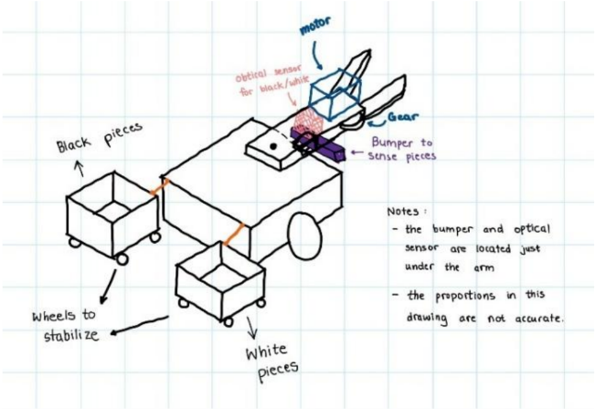
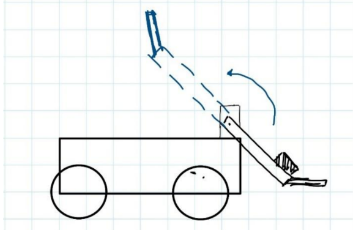
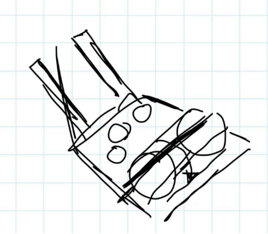
The chassis used a two-wheel drive configuration with omni wheels at the back for stability, especially important since the arm swung backward to deposit pieces. The drive motors were mounted vertically at the front to conserve space, with the VEX IQ Brain positioned directly behind them so it wouldn't obstruct the arm's rotation.
The arm was powered by a vertically mounted motor connected to a central shaft. Since the claw and sensors combined were heavier than expected, an elastic band was added to assist the motor in lifting the arm, preventing it from stalling partway through its motion.
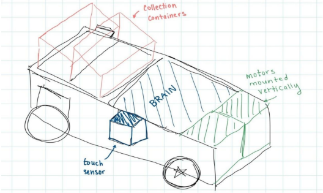
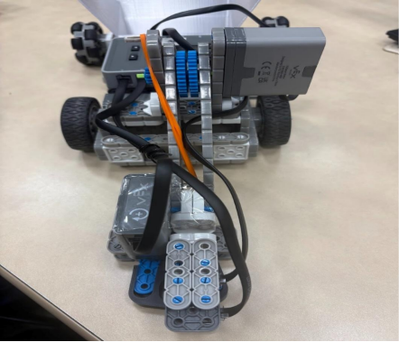
The distance sensor was mounted just above the claw to detect fluctuations in ground distance, signalling when a piece was in the claw's path. The colour sensor, mounted slightly off-centre, used hue and brightness values (rather than simple colour categories) to distinguish the checker pieces, since the pieces were closer to dark brown and off-white than true black and white.
The claw went through two design iterations. The first version was longer and heavier, which caused instability and unreliable sensor readings. The final version was shorter, with a notch that let the VEX attachment fit securely without tape or glue, and a snug circular indent sized to reduce the chance of a piece slipping out.
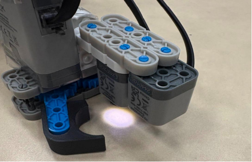
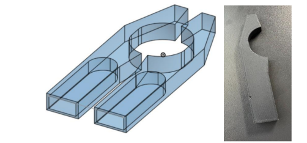
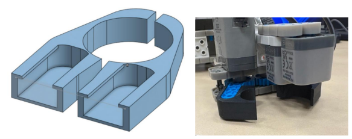
The container design also went through several iterations. The original open rectangular box let pieces bounce sideways off the rim and miss the containers entirely. A second prototype added a higher, forward-sloped back wall to guide pieces in, which helped but still let pieces bounce off the sides. The final design added 45-degree side flaps that funneled pieces inward, reducing missed drops to just 3 out of 80 pieces across testing.
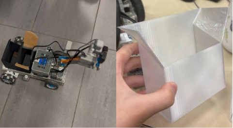
I wrote the closeClaw and openClaw functions that controlled the robot's gripping mechanism. closeClaw reset the claw motor's position and drove it in reverse, applying continuous force to hold a piece securely until it was deliberately released. openClaw reset the motor's position, drove it forward, and waited until it had rotated 30 degrees before stopping, ensuring the claw opened just enough to release a piece without over-rotating.
Beyond the code, I also wrote the team contract at the start of the project and put together the presentations used for the formal project reviews.
The full software was broken into modular functions handling movement, sensing, and sorting separately, which made the main program easier to read, test, and debug independently before combining everything. One key design decision was checking the piece's colour a second time immediately before dropping it, to confirm it hadn't fallen out of the claw during the arm's rotation. The piece counter was only incremented if this second check passed, keeping the final count accurate.
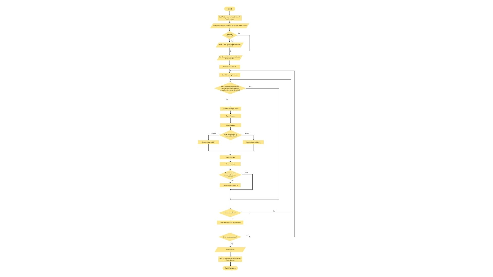
The robot met most of its design criteria, successfully detecting and sorting checker pieces with over 90% accuracy after refining the box design and sensor logic. It reliably handled unexpected events, such as a piece being knocked out of the claw mid-rotation, without miscounting.
A couple of constraints weren't fully met: the robot's turning accuracy occasionally deviated by 6-12 degrees instead of the target 5-degree tolerance, and on a table sized exactly to the robot's operating area, its body length occasionally caused it to tip during rotation.
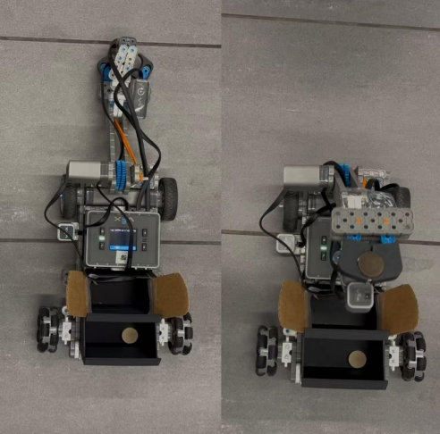
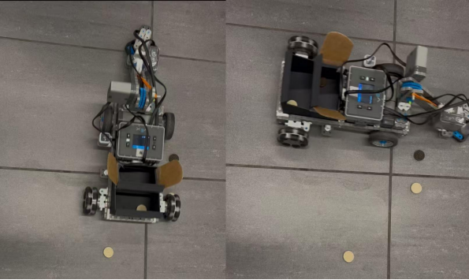